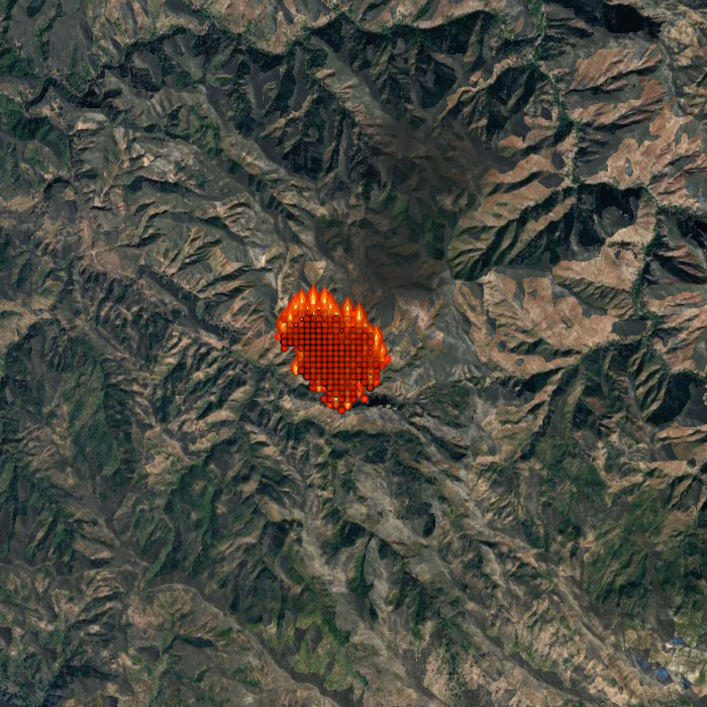

1 Introduction
The edge of a wildfire is the most dangerous place for a firefighter. Legged robots can cross steep, rocky, smoky ground where vehicles stall and drones lose sight, yet a robot near a fire must know where the fire will be, not only where it is. We ask whether a learned spread forecast can keep a robot dog safe while it scouts, and whether the dog's own readings can improve that forecast.
2 Fire-spread forecast
We trained a gradient-boosted tree model (XGBoost2) on ~246,000 VIIRS active-fire detections3 from 30 major wildfires, using 27 features per 50 m cell: weather4, terrain, land cover5 and the local fire shape. The model scales the rate from a Rothermel spread equation1, giving each cell's ignition probability every 15 min (Fig. 1).

a b
b3 Forecast accuracy
On six held-out fires (USA, Bolivia, Siberia, Greece), 91% of cases are spread events, so we compare against a baseline that always predicts spread (Table 1). The model ranks at-risk cells well above chance and is better calibrated, but still over-predicts spread.
| Metric | Model | Baseline |
|---|---|---|
| AUC-ROC (higher is better) | 0.75 | 0.50 |
| Brier score (lower is better) | 0.076 | 0.083 |